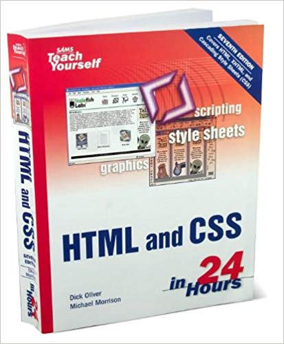
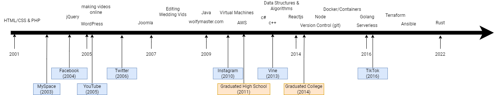
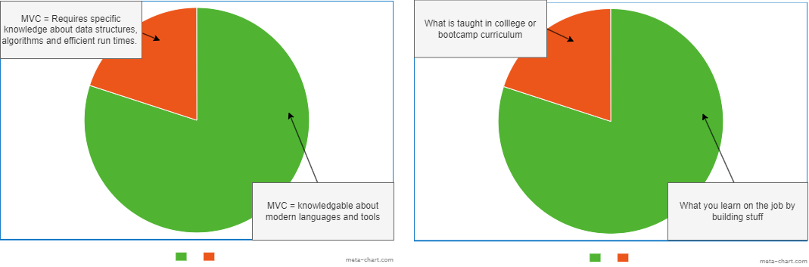

Paul Sherer
WolfyMaster Media
Owner/Developer
SightGain
Engineering Director
Objective
Encourage you to build stuff
Question
A) Who is planning on continuing in this field as a career?
B) What are you planning to do after high school? College? Direct to workforce?
Lets go back to ~2004
Problem: Build an ecommerce store for my parent's business
- How do I have users that can login
- How do I connect to a database?
- Why does the site look like garbage on another computer?
How did i get started or know where to start?


Anybody know this guy?...
The “Numa Numa Dance”, was a webcam video created by Gary Brolsma in November 2004.
It was submitted online to Newgrounds.com on December 2004. This website was unique at the time,
because Newgrounds mainly offered Flash based movies and animations as YouTube didn't exist yet.
New problem
I need a place to upload my videos
so friends can watch them.
just kept going from there

WolfyMaster Media
- Started as a multimedia production business
- Upsold web development & e-commerce
- Found jobs:
- Craigslist
- Referral
- Agency Overflow
- Networking is crucial
"I came across your post for a remote WordPress + Front End Dev. I am interested in the opportunity. I am located in Western PA. Any additional details you could provide would be fantastic. For instance, how many hours/week would this be? I am looking to find something that could offer between 15-30 hours."


Always be learning (80/20)
I looked for opportunities to try something new. As long as
I was 80% certain I could fulfil the obligation, I was confident
I could figure out the other 20%.
Timeline of Events
Contacting/Freelancing vs W2
Contracting/Freelancing
- Set your own rate
- Responsible for own taxes
- No benefits
- Responsible for finding work
- No limits on hrs/wk
W2 (employee)
- Salaried
- Taxes deducted automatically
- Benefits (medical/dental/vision)
- At-will employment
- FTE ~ 40 hr/wk
Contracting/Freelancing
Where to find work?
-
Freelance Marketplaces
- Upwork
- Fiverr
- Craigslist
- Friends/Family
- Local Businesses

If I were starting today...
- JavaScript is huge (Nextjs)
- WordPress is still 43% of the internet
- It's gone through some big changes lately too
- Mobile is much more popular and easier to build
- Lots more people have sites and may just need maintenance
- Start visiting local websites and if you can see an opportunity for improvement, contact them. Agencies do a bad job of following up with maintenance.
Platforms
Lots more options to take advantage of:
Website/e-commerce
- Shopify
- Squarespace
- WordPress
Hosting
- Fly.io
- Github Pages
- Netlify.com
- Railway.app
- Vercel.com
Employee (W2)
The Interview
Experience building and delivering software will greatly impact a traditional interview
- Articulate value & understand the business problems
- Experience & Examples (Show. Don't tell.)
- Leverage / Negotiation
Minimum Viable Candidate
A candidate that possesses the minimum level of skill or ability to be considered for hire.
CS Degree
- Highly technical with a greater emphasis on theory and science
- Curriculum covers origins of computing through ~15 years ago
- Emphasis on data structures and algorithms
- Begins after HS graduation
- >$50k
Bootcamp
- Pure focus on MVC
- Curriculum is focused on the last couple years of trends and future of the field
- Provides "guide rails" and "paved road" on learning software development
- Not as much emphasis on data structures and algorithms
- Could start in a few months
- $10 - $20k
Self-Taught
- Self-paced. Freedom to explore any topic of interest
- Make your own curriculum
- Can start today
- Free
The Pie
Always Be Learning
Available Resources
- Github Student Pack (assorted discounts)
- Digital Ocean (VPS for $5/month)
- Netlify (free tier)
- AWS (student credits)
- Google Cloud (student credits)
- Fly.io
- Github Pages
- Netlify.com
- Railway.app
- Vercel.com
Advice for ramping up
- Build stuff!!
- Solve your own problems
- Read (books & actual code)
- YouTube Videos & Blog articles (dev.to)
- Reverse engineer stuff
- Solve other people's problems
Who has questions?